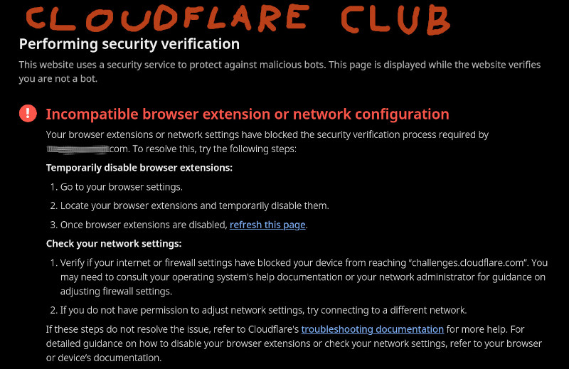

I hate modern Internet#
Did you ever encounter this?
Cloudflare internet club#

My reaction is always the same:

I see it too often to my liking.
It partitions world wide web into free internet and gated 💩 cloudflare 💩 internet.
I refuse to allow cloudflare to run their challenges in my browser which then eats my memory and kills my CPU - they really don't work nicely with NoScript - you allow to run one URL and it's start to go absolute berserk in some cases.
I always have opened half a dozen of apps and just my browser has dozen of windows with dozens of tabs each... and I like it that way - I suspend my laptop when I need and return back to unfinished work - for days on end...
I really hate when rogue website throws a wrench to it and triggers OOM-killer.
I own my hardware (all 16-32 GB of RAM and 12+ cores) not cloudflare and not any other website (banking website are offenders too) - Don't run your crap on my system!!
This really boils my blood and you did not ask for permission and I did not agree to it!!!
Do you want to rent my computing power? Fine, PAY ME then...
I get it - bots and aislop companies scraping internet are PITA but many other sites cope with the decline of the open web much gracefully - cloudflare is so in my face.
But it is not just cloudflare partition...
Internet spheres (jails)#
In no particular order.
💩 Cloudflare #
It got its due above.
💩 Apple #
I don't use and I don't care...
💩 Google #
Google is working for years to create walled garden just for themselves - it is why they made 💩 chrome 💩 browser in the first place (and dropped company slogan Don't be Evil).
Google sphere is huge... I don't use google search engine for years (not directly at least) but most of the planet still do...
Google's YouTube is the go to place for people to watch content. Lot of technologies is backed by google and their services have fingers everywhere. You probably cannot go online without google noticing...
💩 Facebook #
Other big sphere is facebook - I have only dummy profile there (why? just a moment) and I always boycotted it since inception of that 💩 socmed 💩 nonsense. Why the hell you want to tell on yourself everything?? You make it so easy for surveillance state and three letter agencies...
(hmm, maybe I should take my own advice, oh well)
Avoid this prison island...
But so many groups even companies have only facebook page to reach them... In 9 out of 10 encounters with such page I just look elsewhere than to bother to login (container tab).
In one out of ten cases though I do login 🤬 ... and so I have dummy profile on the poop pages - just for that one out of ten reasons when I have no other option.
That is another section of the internet behind a wall with a gate I refuse to enter.
💩 Twatter #
It was always a censoring echo chamber and a cesspool. Now as "X" it is better (why name change though?) but still no reason for me to ever use let alone register.
Inconsequential to me personally.
💩 Microslop #
Microslop is surely another sphere but I don't really come to contact with it - I don't use their bing search (not even by a proxy) and I certainly don't use their SpywareOS ® unless it is company laptop in which case is better to just change the job if one can.
They did buy github though and I am not ready to leave that yet.
💩 Wikipedia #
As you can notice I do link to it very often because it is convenient...
I will not be doing deep-dive on this one - this deserves a separate article.
Just briefly:
- Wikipedia is go to place and first one to check for many of us
- Wikipedia is fully hijacked by activists
- Wikipedia was always unreliable (for a reason) - Do not cite?
- They use donations on non-wiki reason (read activism)
Edit wars are real and anything even tangently touching politics cannot be relied upon.
E.g. I wanted to link controversy about this scumbag: Mitchell Baker
But the interesting section was deleted - I had to look for it in the history: Old version
Lastly - they constantly beg for money but you know what?
Therefore we need an alternative.
Browser situation#
My pondering on this in another rant: Browsing for Browser.
Modern internet sucks!#
It suffers from ensh!ttification and bloat 💩.
We need resurgence of the old - hobby and personal websites and no big tech (and new browsers).